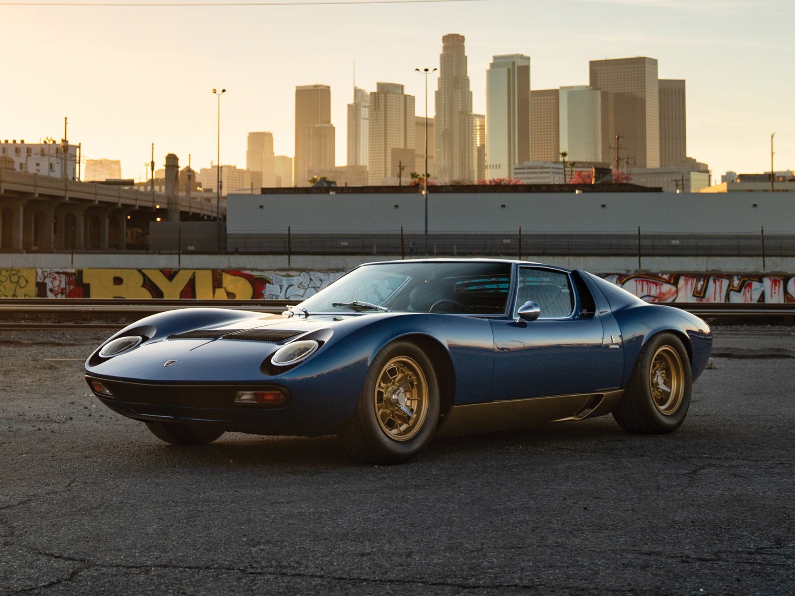
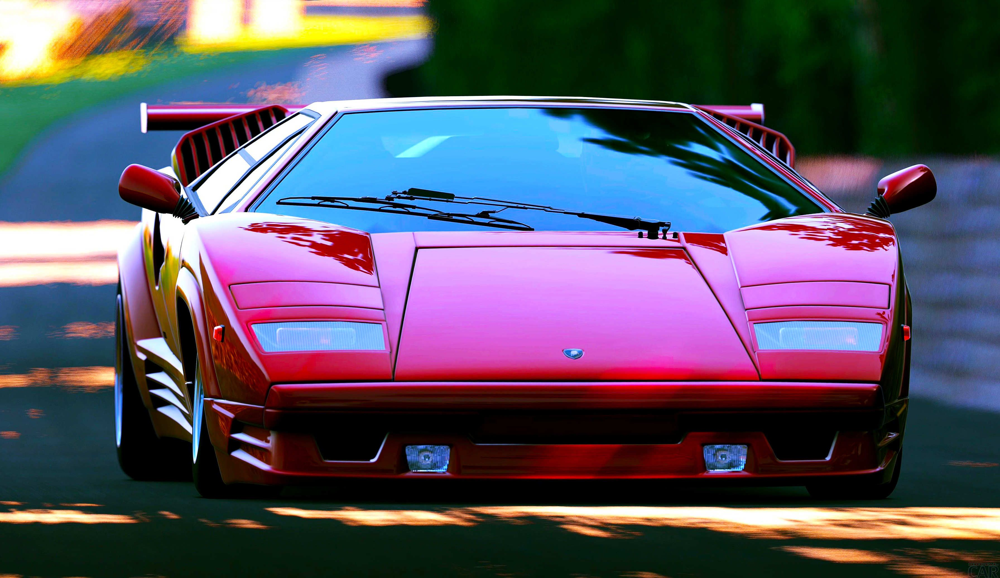

Lamborghini Miura
Lamborghini Miura - sportinė mašina, kuri buvo gaminama tuo metu neįžymios traktorių kompanijos „Lamborghini“ 1966 - 1973 metais. Miura buvo pirmas „Lamborghini“ bandymas prisijungti prie automobilių industrijos, kuris buvo be galo sėkmingas. Ši mašina buvo pirmoji komplektuojama su per viduriu įtaisytu varikliu ir dviejomis sėdynėmis. Kai buvo išleistas, šis automobilis buvo greičiausias iš visų to meto automobilių. Miura 1973 metais buvo pakeista kita legenda: „Lamborghini Countach“

Lamborghini Countach